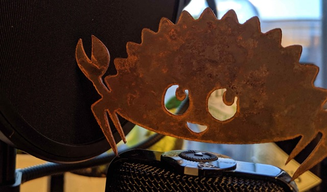

This Month in Rust GameDev #34 - May 2022
Welcome to the 34th issue of the Rust GameDev Workgroup's monthly newsletter. Rust is a systems language pursuing the trifecta: safety, concurrency, and speed. These goals are well-aligned with game development. We hope to build an inviting ecosystem for anyone wishing to use Rust in their development process! Want to get involved? Join the Rust GameDev working group!
You can follow the newsletter creation process by watching the coordination issues. Want something mentioned in the next newsletter? Send us a pull request. Feel free to send PRs about your own projects!
- Announcements
- Game Updates
- Learning Material Updates
- Engine Updates
- Tooling Updates
- Library Updates
- Other News
- Popular Workgroup Issues in Github
- Discussions
- Requests for Contribution
- Jobs
Announcements
Rust Graphics Meetup 2
The 2nd Rust Graphics Meetup took place on the 21st of May. The videos of the talks have been released:
- Vismut - Lukas Orsvärn
- Screen-13 - John Wells
- Optimizing wgpu with Data Driven Design - Connor Fitzgerald
Rust GameDev Meetup

The 16th Rust Gamedev Meetup took place in May. You can watch the recording of the meetup here on Youtube. Here was the schedule from the meetup:
- RustConf Arcade Cabinet - @carlosupina
- Puzzle platformer - @tesselode
- Veloren - @AngelOnFira
- Graphite - @GraphiteEditor
The meetups take place on the second Saturday every month via the Rust Gamedev Discord server and are also streamed on Twitch. If you would like to show off what you've been working on at the next meetup on June 11th, fill out this form.
3D Ferris

@RayMarch is creating a game-ready 3D model of Ferris the Rustacean. These links provide a more detailed look: 360 overview, Ferris dancing.
Once the model is finished, it will be published under a permissive license on Github, so you can use it in your 3D game, rendering demo, v-tuber avatar, you name it!
If you have any feedback feel free to share on Discord.
Discussions: Twitter
RustConf Arcade Cabinet

Carlo is building a custom arcade cabinet that will be at RustConf 2022 in Portland. It is an opportunity for Rust game developers to share their games with the broader community. If you are interested in getting your game on the cabinet, read this Twitter thread and fill out the interest form. All of the parts for the cabinet are currently in production, and art for the sides is in progress. Check out the latest update here.
Game Updates
Battleship
Battleship by @orhun is the battleship game implemented in Rust.
Features:
- Fully playable between 2 players on the terminal.
- No installation required.
- Works over TCP sockets.
- Very lightweight to host your own server (only has 1 dependency).
ROOM4DOOM
ROOM4DOOM is a rewrite of the classic Doom engine in Rust with some modernisation.
@flukejones has been very busy in the last 4 months completing many parts of ROOM4DOOM; rendering, subsystems for menus, status bar, intermissions, and of course the actual gameplay - you can now complete Doom 1 in ROOM4DOOM.
A recent Twitter thread has been cleaned up and expanded into a blog post providing context to the project and a walk-through of the history. You can view that here.
limbo_pass

limbo_pass by @shnewto is a little 3D walking sim in Bevy that uses scenes, meshes, and materials exported directly from Blender.
Features include:
- Blender assets exported to glTF
- Collision detection with bevy_rapier3d
- Looping audio with bevy_kira_audio
For more info, see the announcement post and the gameplay video.
Hydrofoil Generation
Hydrofoil Generation (Steam, Facebook, Discord) is a realistic sailing/foiling inshore simulator in development for PC/Steam that will put you in the driving seat of modern competitive sailing. Hydrofoil Generation is based on a custom made DirectX 11 based engine.
A new trailer just landed showcasing new animations, the new Hong Kong location, and camera modes.
Meanwhile, private beta-testing is well underway with good feedback regarding boat controls and physics, netcode, and software stability, Rust for sure delivered on all the promises here.
The first set of Sailing rules has also been implemented and part of the current beta testing process with more rules to be added in the next months.
Sadly the target Q2 2022 Early Access release on Steam couldn't be hit and now the team is aiming at a Q4 2022 release.
Country Slice
Country Slice (WIP name) is a relaxing building game being made by @anastasiaopara.
This month, she added an animated undo system. You can find more details in this Twitter thread, and follow the newsletter for more updates.
Way of Rhea
Way of Rhea is a puzzle adventure with hard puzzles and forgiving mechanics being produced by @masonremaley in a custom Rust engine. You can support development by wishlisting the game on Steam, and giving feedback on the Steam demo.
Way of Rhea was selected to be part of the Cerebral Puzzle Showcase! The event is over, you can still find the list of games and some of the demos here. Recent updates:
- More work was done on the Jungle Biome visuals
- Dynamic gradient overlays were added to the engine to give a sense of depth
- Fixed bug where Nvidia drivers would incorrectly trigger the crash dump writer
- Fixed a long-running draw call sorting problem that could lead to popping
- Fixed an audio failure when unplugging the active speaker
Veloren
A glorious flight to distant lands
Veloren is an open world, open-source voxel RPG inspired by Dwarf Fortress and Cube World.
In May, work was done on Wyvern models. Smoke was improved from houses, and now has different colours and strengths. A rib cage generator was added, so now there are large bone structures from ancient times around the world. Level of detail objects were added, so trees can now be seen on far-off mountains. This makes the world feel significantly more alive. A lot of work was done on the performance of the game server, as Veloren has been seeing over 100 concurrent players at peak on the server nearly every day for the past few weeks.
Lots of work was done on balancing items and drop rates. Water caves have been worked on, which now means that you might need to enter them from underwater. Modular weapons were merged, which was a change several months in the making. NPCs are now able to pick up items that are on the ground. Work was done on taming and mounting various animals. Weather is still in the works, with improvements to the ambient SFX system for rain. A new UI concept was created for what Airshipper might be able to look like in the future.
May's full weekly devlogs: "This Week In Veloren...": #170, #171, #172, #173, #174.
Hug With Me?
The Hug Game by the HIHAHEHO Studio is an active ragdoll remote hugging simulator made with Bevy and rapier.
The arms are individually controlled using a keyboard on desktop and touch controls on mobile to make various hugs. You can click "Random” to play with a random person or “Room” to share a link to someone you want to play with.
The source code of the game is available on GitHub.
Combine&Conquer
Connect factories on different planets via spaceships
Combine&Conquer by Martin Buck is a WIP strategy game about automation similar to Satisfactory or Factorio. This month's updates include:
- a new view to see in-flight spaceships,
- single render node,
- and the first public prototype release on itch.io.
Discussions: /r/rust
Engine Updates
Fyrox

Fyrox (Discord, Twitter) is a game engine that aims to be easy to use and provide a large set of out-of-the-box features. In May it hit version 0.25 which added a lot of new functionality:
- Static plugin system.
- User-defined scripts.
- Play mode for the editor.
- Animation blending state machine editor.
- Prefab inheritance improvements.
- Layout and render transform support for widgets.
- Shortcuts improvements in the editor.
- UI performance improvements.
- Double click support in
fyrox-ui. - Better serializer error recovery.
- Tons of small improvements and fixes.
Sometime after, the engine hit version 0.26 which was primarily focused on bug fixing, but also added some interesting features:
- Project template generator.
- Script API improvements.
- Shader cache fixes.
- Skybox validator.
See full list of changes in respective blog posts - 0.25 and 0.26. Everybody, who wants to learn how to use the engine should check the new 2D Platformer Tutorial.
miniquad
miniquad is a pure Rust, cross-platform graphics library.
The biggest PR in miniquad's history landed this month, finishing
the effort of removing all the sapp legacy.
Changes include:
- No more
sapp-*crates. Now it's just one crate, miniquad! No mess with individual crates anymore, no FFI for miniquad - sapp communication. - On Linux, miniquad does not depend/statically link with lib*-dev packages. Miniquad can choose between glx/egl, x11/wayland at runtime.
- MacOS implementation does not depend on any Objective C code anymore.
Dims
Dims (Twitter, Discord, YouTube) is a WIP open-world creation platform. Some highlights from the project's latest dev log:
- A terrain tool that allows quick landscape creation while still making sure that the biomes are unique and diverse.
- A tool to let creators script gameplay events without having ever done any programming.
- The pre-alpha is now open for a limited time, so come and try building your own open world games!
Also, a bunch of feature videos and tutorials were uploaded on the YouTube channel - make sure to take a look if you're interested in Dims.
Discussions: /r/rust_gamedev, /r/worldbuilding
Learning Material Updates
Intro to Material/Shaders in Bevy

Matthew Bryant has created a series about Bevy's Material abstraction, showing how to use custom WGSL shaders in Bevy.
The series walks through the documentation to understand why steps are done in order to build a clear theoretical understanding of Bevy's high-level abstractions.
- The first of the three videos covers the bare minimum needed to render a material;
- the second introduces bind groups to use textures and generic data in the shader;
- and the final video ties into Bevy's ECS to copy game data onto the graphics card every frame.
He will be releasing videos about UI in Bevy and Rapier physics next month.
Kubecon 2022, Lightning Talk: Wasmcloud + Bevy ECS
QQparty is a serverless multiplayer game built with Bevy ECS and Wasmcloud.
This month, @rustropy_gaming joined Cosmonic to give a series of Wasmcloud talks in Kubecon 2022 VLC. They demonstrated how Bevy can be added into Wasmcloud's actors as a serverless game server.
You can check out a recording of the talk on YouTube, as well as viewing the slides. For updates on QQparty, follow @rustropy_gaming on Twitter!
Rusteroids

Rusteroids is a tutorial recreating a clone of Asteroids in Rust, using SDL2 and the Specs library.
New episodes are released weekly and added to the playlist. Most recently, collision detection was added to reset the game state when the asteroid and player collide. The latest episode is here.
You can subscribe to the YouTube Channel, to never miss an episode, or follow @ecatstudios on Twitter!
Starting a new 2d platformer with Bevy ECS

@chrisbiscardi published a video on setting up a new 2D platformer project using Bevy. The video covers integrating with LDTK, Rapier, and becy_ecs_tilemap to get a working character controller with collisions in a sandbox. It also touches on staple crates such as bevy_asset_loader and iyes_loopless.
Discussions: /r/rust_gamedev, Twitter
Comparing a Voxel Game in F# and Rust
This article walks through the process of rewriting an F# game in Rust. It explores the similarities between the languages and talks about using simple code constructs where possible. It talks about the Rust crates used to help with the process. Finally, it goes over a conclusion comparing the speed of both versions of the games, and the sizes of the codebases.
Rustacean Station 66: Eric Smith

In May the Rustacean Station podcast interviewed Eric Smith, the author of "Game Development with Rust and WebAssembly".
In this episode, lots is discussed about why Rust is becoming a good language for game development, different game engines, is Rust web-ready, insights on Rust game development, and Eric's writing process.
GamesFromScratch: Rust Game Development in 2022
GamesFromScratch shared a YouTube video with an overview of the most popular engines, frameworks, and libraries for Rust game development, including: Amethyst, Piston, Bevy, Fyrox, ggez, godot-rust, raylib, SDL2, and SFML.
New Book: Multiplayer Game Development in Rust
The "Multiplayer Game Development in Rust" book by @Extrawurst and @lyonbeckers is now available in Manning Early Access Program.
Multiplayer Game Development in Rust teaches you to construct your own multiplayer game. You’ll build a simple game client, but the real work happens on the backend. Chapter-by-chapter, you’ll add scalability, persistence, benchmarking, and tracing to support game features like real-time multiplayer scorekeeping, leader boards, and server-to-client messaging. Along the way, you’ll get pro tips about what makes Rust so great for game development, and you’ll work with state-of-the-art technologies that take full advantage of the cloud. Best of all, everything you learn will apply to any application that requires real-time server technology.
At the moment, 4 of 12 chapters are available:
- Introducing Rust in Games
- Building a Game Client
- Building a Game Server
- Making a Multiplayer Client
The book is estimated to be finished in early 2023.
Audio Libraries Considered Challenging
@tesselode shared an article about the difficulties of making audio libraries:
I develop a game audio library called Kira. Here's some of the hard parts I've figured out. If you decide to make an audio library for some reason, learn from my experimentation! <...> Making audio libraries is hard. I don't know the best way to do it. This is just what I've tried and how it went for me.
Discussions: /r/rust
Tooling Updates
Bloom3D

Bloom3D is a minimalist web app for 3D modeling that's built in Rust.
Bloom is powered by a custom game engine called koi that is open-sourced
on GitHub.
This month @kettlecorn released a new version of Bloom3D that adds a variety of new features including a rectangle tool, move tool, and OBJ export. Check out the Twitter announcement thread for an overview and videos of all the new features.
Graphite

Graphite (website, GitHub, Discord, Twitter) is a free, in-development raster and vector 2D graphics editor. It will be powered by a node graph compositing engine that supercharges your layer stack, providing a completely non-destructive editing experience.
-
Spring cleaning: The past month's Sprint 15 work has focused mostly on technical debt cleanup, documentation, and bug fixes around the frontend. That continues with the Rust backend next month.
-
A radiant gradient: The Gradient tool now supports radial styles in addition to linear.
-
New blog post: Learn about the plans for distributed computing across many CPUs and GPUs with Graphene, the Rust-based node graph engine and renderer that will power Graphite.
Open the Graphite editor in your browser to give it a try and share your creations with #MadeWithGraphite on Twitter.
Library Updates
bevy_mod_scripting

bevy_mod_scripting by @makspll is a brand new Bevy plugin enabling multi-language scripting (currently in Lua and Rhai).
The plugin is in early stages but as of now supports:
- Handling events at multiple points of your stage pipeline.
- Sending events to specific, or all scripts.
- Setting event priority to order your callbacks.
- Defining custom state and APIs at initialization.
- Sending run-time error events (to for example show them in an in-game console).
- One-shot scripts.
General Bevy API support is under-way so stay tuned!
bevy_silk
bevy_silk by @ManevilleF is a cloth physics plugin for Bevy.
Apply cloth physics to any mesh, by adding a single component to your entity!
Features:
- Collision support using bevy_rapier
- Global and per-entity physics customization
- Dynamic smooth and flat normals
- Wind forces
- Custom cloth anchors
The library is fully documented and the repository provides various usage examples.
Discussions: Twitter
bevy_asset_loader
bevy_asset_loader by @nikl_me is a Bevy plugin that helps with asset loading and asset organisation. It greatly reduces boilerplate code for loading states and can resolve asset configuration at run time.
This month, version 0.11.0 was released. It supports loading lists of files
as Vec<HandleUntyped> or Vec<Handle<T>>. This is an alternative to loading
folders, which is not supported on the web. You can now track the loading
progress of your assets with iyes_progress and build loading bars.
Integrating with iyes_loopless gives you some benefits of stageless
scheduling in current Bevy. Additionally, the loading of assets fields
without attributes was improved. It now uses the FromWorld trait
instead of Default.
More improvements will likely follow for the dynamic asset story. One goal is to allow loading any custom values as dynamic assets.
bevy_kira_audio
bevy_kira_audio by @nikl_me is an alternative audio plugin for Bevy. It uses Kira to play and control game audio.
This month saw the release of version 0.10.0. The plugin
now uses the latest Kira release, which was a major rewrite.
The audio channel API is improved by making all channels
resources in Bevy's ECS and sounds can be directly loaded
from asset files with settings like their volume, playback
rate, or panning. Additionally, the audio backend can now
be configured before creation through a settings resource.
Sparsey
Sparsey by @LechintanTudor is a sparse set-based Entity Component System with beautiful and concise syntax.
The latest release, 0.8.0, adds some convenience panicking functions for
borrowing resources and a method for resetting a World to its default state
without having to recreate it.
Notan v0.4
Notan is a simple and portable layer designed to create your own multimedia apps on top of it without worrying about platform-specific code.
The main goal is to provide a set of APIs and tools that can be used to create your project in an ergonomic manner without enforcing any structure or pattern, always trying to stay out of your way. The idea is that you can use it as a foundation layer or backend for your next app, game engine, or game.
The latest version v0.4 adds touch support and fixes some minor bugs.
carrier-pigeon
carrier-pigeon by @MitchellMarinoDev is a rusty networking library for games. It builds on the standard library's TcpStream and UdpSocket types and handles all the serialization, sending, receiving, and deserialization. This way you can worry about what to send, and pigeon will worry about how to send it. This also allows you to send and receive different types of messages independently.
bevy-pigeon is a Bevy plugin for carrier-pigeon.
bong is a combination of breakout and pong that showcases bevy-pigeon and carrier-pigeon.
Popular Workgroup Issues in Github
Other News
- Other game updates:
- After the initial release of BITGUN, LogLogGames released a bunch of updates packed with various bugfixes and improvements.
- Gravity Well is a simple two-player (shared keyboard) game in which you collect salvage and try not to fall into a black hole that can be played online here.
- Flesh got a new enemy type, new UI's fade in/out, and damage animation for enemies.
- Grocery Bagger 9000 is a WIP Tetris-like puzzler built with Bevy.
- Other tooling updates:
- clymene by @LukeRaccoon is a CLI atlas generation tool that doesn't just outputs a packed image, but also a data set about its sources, which can be either static images or animations.
- Other learning material updates:
- The Unofficial Bevy Cheatbook by got a WIP chapter about rendering.
- @scvalex shared a blog post about how the NixOS flake for Rust/egui/eframe/glutin/OpenGL looks like.
- @ychshn shared a live-stream recording "Let's Code Snake with Rust and WASM".
- PhaestusFox added a bunch of new videos to their "Bevy Basics" YouTube series.
- Other library updates:
- mmap_cache is a low-level API for a memory-mapped cache of a read-only key-value store.
- crevice v0.10 brings mint integration and a couple of API improvements.
- glyphon provides a simple way to render 2D text with wgpu.
- egui 0.18 was released, with the ability to embed 3D inside egui, table and date picker widgets, better text contrast in bright mode, and more.
- Following the release of egui v0.18, bevy_egui 0.14 and puffin_egui 0.15.0 were published.
- bevy_puffin integrates the puffin instrumentation profiler with Bevy.
- bevy_rosc integrates rosc - an Open Sound Control library - into Bevy.
- bustsuri is a Bevy asset that provides 2D collision detector and kinematics.
- The Bevy engine started collaborating with @dioxuslabs on a flexible, high-performance, cross-platform UI layout library sprawl (based on abandoned stretch).
Discussions
Requests for Contribution
- Graphite is looking for contributors to help build the new node graph and 2D rendering systems.
- winit's "difficulty: easy" issues.
- Backroll-rs, a new networking library.
- Embark's open issues (embark.rs).
- wgpu's "help wanted" issues.
- luminance's "low hanging fruit" issues.
- ggez's "good first issue" issues.
- Veloren's "beginner" issues.
- Amethyst's "good first issue" issues.
- A/B Street's "good first issue" issues.
- Mun's "good first issue" issues.
- SIMple Mechanic's good first issues.
- Bevy's "good first issue" issues.
Jobs
- DIMS (Stockholm/Remote): Various roles, open applications accepted.
- Embark Studios (Stockholm/Hybrid Remote): Various roles, open applications accepted.
That's all news for today, thanks for reading!
Want something mentioned in the next newsletter? Send us a pull request.
Also, subscribe to @rust_gamedev on Twitter or /r/rust_gamedev subreddit if you want to receive fresh news!
Discuss this post on: /r/rust_gamedev, Twitter, Discord.